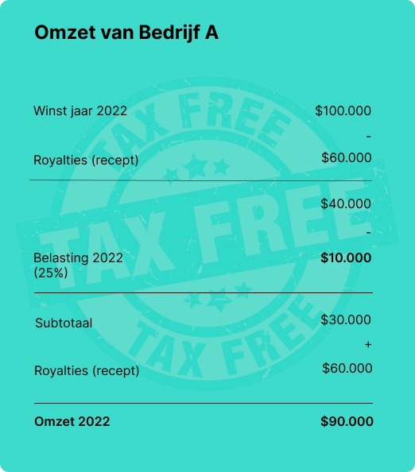
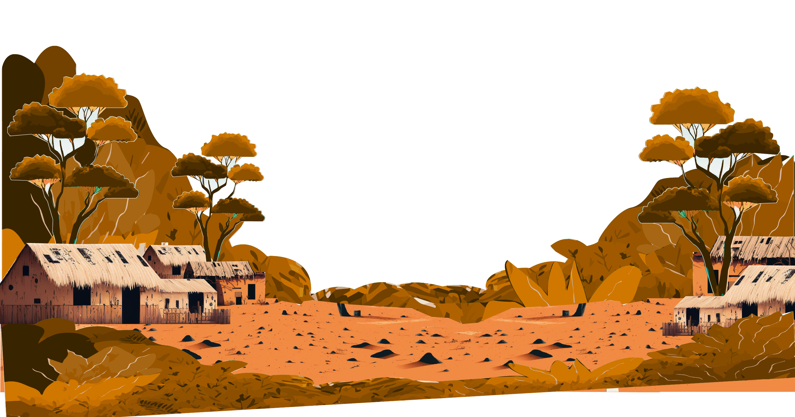
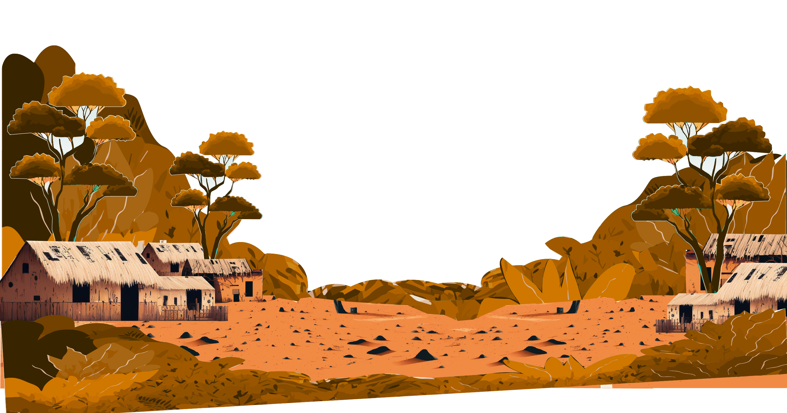
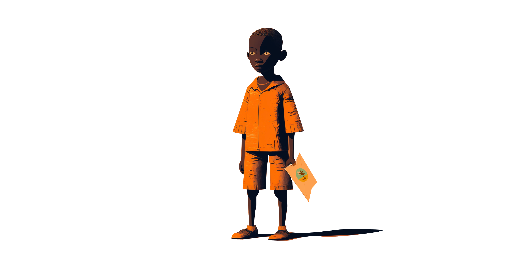
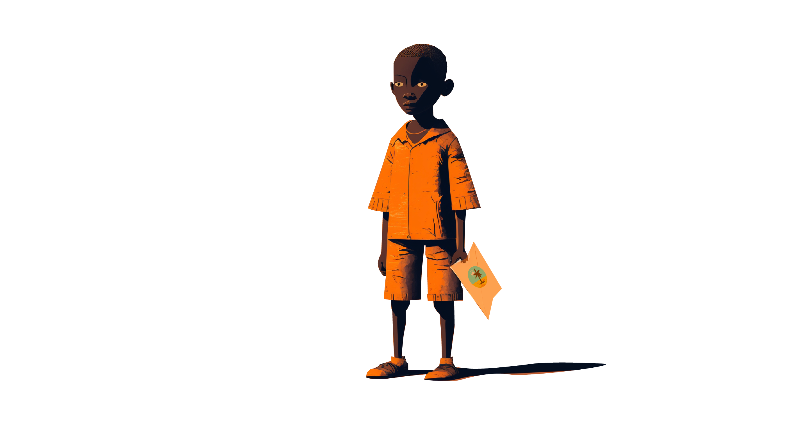
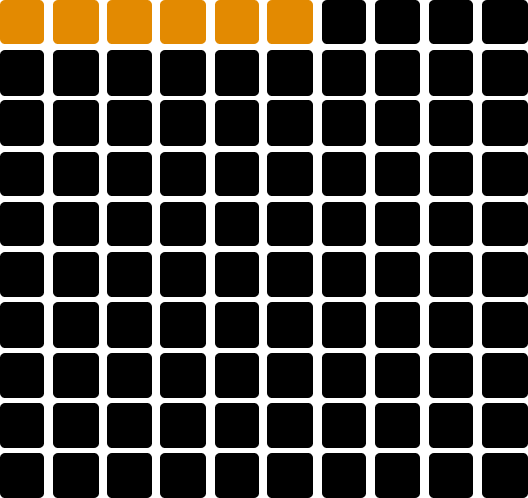
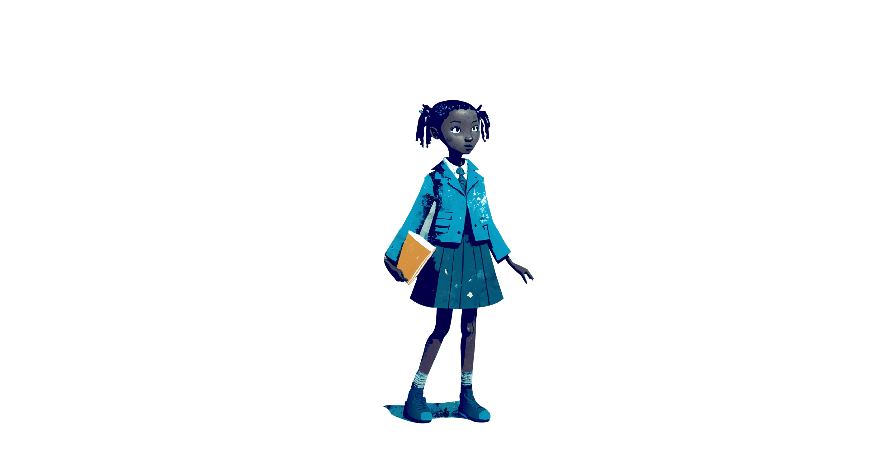

Jij hebt er mede voor gezorgd dat Mozambique geen winst maakt en hierdoor zich niet kan ontwikkelen
Minder kinderen naar de basisschool
Less children to school
Mais crianças na escola
Minder baan mogelijkheden voor docenten
Less job opportunities for teachers
Mais oportunidades de emprego para professores
Minder mogelijkheid voor verbetering infrastructuur
Less opportunity for infrastructure improvement
Mais oportunidades para melhorar a infraestrutura

Wat is het probleem?
What is the problem?
O que é o problema?
Wat bevat een verdrag en wat is de impact ervan?
What does a treaty contain and what is the impact of it?
O que contém um tratado e qual é o impacto dele?
Het tekenen van verdragen met oneerlijke belastingpercentages kan voor Mozambique een groot probleem zijn. Door deze slechte overeenkomsten, betalen de landen die ze ondertekenen vaak weinig of geen belasting, wat leidt tot een grote hoeveelheid geldverlies voor Mozambique. Dit geld kan worden gebruikt om belangrijke problemen op te lossen en groei- en ontwikkelingsmogelijkheden te creëren. Helaas, door de oneerlijke verdragen, mist Mozambique deze kans. Het is van groot belang dat er eerlijkere verdragen worden getekend, zodat landen Mozambique de kans krijgen om hun volle groeipotentieel te bereiken.
Signing treaties with unfair tax percentages can be a big problem for Mozambique. By signing these bad agreements, the countries that sign them often pay little or no tax, which leads to a large amount of money loss for Mozambique. This money can be used to solve important problems and create growth and development opportunities. Unfortunately, due to the unfair treaties, Mozambique misses this opportunity. It is of great importance that fairer treaties are signed, so that countries give Mozambique the chance to reach its full growth potential.
Assinar tratados com porcentagens de impostos injustas pode ser um grande problema para Moçambique. Ao assinar esses acordos ruins, os países que assinam geralmente pagam pouco ou nenhum imposto, o que leva a uma grande perda de dinheiro para Moçambique. Este dinheiro pode ser usado para resolver problemas importantes e criar oportunidades de crescimento e desenvolvimento. Infelizmente, devido aos tratados injustos, Moçambique perde essa oportunidade. É de grande importância que tratados mais justos sejam assinados, para que os países dêem a Moçambique a chance de alcançar seu potencial de crescimento total.
Wat is belastingontwijking
What is tax evasion
O que é evasão fiscal
Wat houd het in?
What does it mean?
O que isso significa?
Bedrijf A's voorbeeld laat zien hoe sommige bedrijven, vaak grote bedrijven, een deel van hun belasting kunnen ontwijken. Dit gebeurt vaak door middel van een zogeheten "on-/off-switch" waarbij een bedrijf een anoniem bedrijf opzet in een ander land, waar ze een deel van hun winst naar toe verplaatsen. Dit bedrijf koopt dan bijvoorbeeld een recept of licentie van het anonieme bedrijf waardoor de winst lijkt te verminderen, terwijl in werkelijkheid de winst hetzelfde blijft maar de belasting minder wordt. Dit soort praktijken kan leiden tot een groot geldverlies voor de overheid en kan ook oneerlijke concurrentie veroorzaken voor andere bedrijven die wel hun belastingen betalen. Het is belangrijk dat er maatregelen worden genomen om dit soort praktijken tegen te gaan en ervoor te zorgen dat bedrijven hun eerlijke deel van de belasting betalen.
Company A's example shows how some companies, often large companies, can avoid part of their tax. This often happens through a so-called "on-/off-switch" where a company sets up an anonymous company in another country, where they move part of their profit to. This company then buys, for example, a recipe or license from the anonymous company so that the profit seems to decrease, while in reality the profit remains the same but the tax is less. Such practices can lead to a large loss of money for the government and can also cause unfair competition for other companies that do pay their taxes. It is important that measures are taken to counteract such practices and ensure that companies pay their fair share of tax.
O exemplo da empresa A mostra como algumas empresas, muitas vezes empresas grandes, podem evitar parte de seus impostos. Isso geralmente acontece por meio de um chamado "interruptor on-/off" em que uma empresa cria uma empresa anônima em outro país, onde eles movem parte de seu lucro. Esta empresa, por exemplo, compra uma receita ou licença da empresa anônima, para que o lucro pareça diminuir, enquanto na realidade o lucro permanece o mesmo, mas o imposto é menor. Essas práticas podem levar a uma grande perda de dinheiro para o governo e também podem causar concorrência desleal para outras empresas que pagam seus impostos. É importante que medidas sejam tomadas para combater essas práticas e garantir que as empresas paguem sua parte justa de impostos.
Doorsluislanden
Offshore countries
Países offshore
Wat zijn dat?
What are they?
O que são?
Een belastingsdoorsluisland is een belastingtechnische constructie waarbij een bedrijf of organisatie investeringen in een land doet via een tussenmaatschappij in een ander land met een lagere belastingtarief. Dit wordt gedaan om de belastingdruk op de winst van het bedrijf of de organisatie te verminderen. Een Amerikaans bedrijf wil investeringen doen in land A waar de belastingtarieven op winst hoog zijn. In plaats daarvan sticht het bedrijf een dochteronderneming in land B, een land met lagere belastingtarieven, en investeert geld in de dochteronderneming. De dochteronderneming maakt winst en betaalt belasting in land B, met een lager tarief dan in land A. Vervolgens leidt het bedrijf geld terug naar de moederonderneming in de Verenigde Staten, waardoor de belastingdruk op de winst van het bedrijf vermindert.
An offshore tax haven is a tax-technical construction in which a company or organization invests in a country via a subsidiary company in another country with a lower tax rate. This is done to reduce the tax burden on the profit of the company or organization. An American company wants to invest in country A where the tax rates on profit are high. Instead, the company establishes a subsidiary in country B, a country with lower tax rates, and invests money in the subsidiary. The subsidiary makes a profit and pays tax in country B, with a lower rate than in country A. Then the company transfers money back to the parent company in the United States, reducing the tax burden on the profit of the company.
Um paraíso fiscal offshore é uma construção tributária em que uma empresa ou organização investe em um país por meio de uma subsidiária em outro país com uma taxa de imposto menor. Isso é feito para reduzir a carga tributária sobre o lucro da empresa ou organização. Uma empresa americana quer investir no país A, onde os impostos sobre o lucro são altos. Em vez disso, a empresa estabelece uma subsidiária no país B, um país com
Effecten op Mozambique
 

 

Welke landen zijn de boosdoeners
Which countries are the culprits
Quais países são os culpados
Landen die een verdrag hebben met Mozambique
Countries that have a treaty with Mozambique
Países que têm um tratado com Moçambique
Er zijn in totaal 9 landen die momenteel een verdrag hebben afgesloten met Mozambique. In zo een verdrag zou het ideale belasting percentage voor Mozambique 20% zijn, op deze landkaart zie hoeveel belasting deze landen in werkelijkheid aan Mozambique betaald.
There are a total of 9 countries that currently have a treaty with Mozambique. In such a treaty, the ideal tax rate for Mozambique would be 20%, on this map you can see how much tax these countries actually pay to Mozambique.
Há um total de 9 países que atualmente têm um tratado com Moçambique. Em tal tratado, a taxa de imposto ideal para Moçambique seria de 20%, neste mapa você pode ver quanto imposto esses países realmente pagam a Moçambique.
Bekijk de geschatte alternatieven
View the estimated alternatives
Veja as alternativas estimadas
Kinderen zijn de dupe
Children are the victims
As crianças são as vítimas
Met de 140 miljoen dollar die Mozambique geschat per jaar misloopt door deze verdragen, kunnen heel veel nuttige voorzieningen voor Mozambique gefacilliteerd worden. Een van de belangrijkste dingen waar dit geld aan gespendeerd zou kunnen worden is het lagere onderwijs van kinderen in Mozambique. Met de on/off knop kan het je verschil in aantal kinderen wat naar school kan gaan met deze geschatte 140 miljoen per jaar!
With the 140 million dollars that Mozambique estimates per year is lost through these treaties, many useful facilities for Mozambique can be facilitated. One of the most important things that this money could be spent on is the lower education of children in Mozambique. With the on/off button you can see the difference in number of children that can go to school with this estimated 140 million per year!
Com os 140 milhões de dólares que Moçambique estima por ano é perdido através desses tratados, muitas instalações úteis para Moçambique podem ser facilitadas. Uma das coisas mais importantes que esse dinheiro poderia ser gasto é a educação inferior de crianças em Moçambique. Com o botão on/off você pode ver a diferença no número de crianças que podem ir para a escola com este estimado 140 milhões por ano!
-$140 Miljoen
-$140 Million
-$140 Milhões
Zonder $140 Miljoen gaat maar 6% van de kinderen naar school
Without $140 Million only 6% of the children go to school
Sem $140 Milhões, apenas 6% das crianças vão para a escola
Geld had ook hiervoor gebruikt kunnen worden
Money could also have been used for this
O dinheiro também poderia ter sido usado para isso
Scroll om te zien waar 140 miljoen ook aan uitbesteed had kunnen zijn
Scroll to see where 140 million could also have been spent
Role para ver onde 140 milhões também poderiam ter sido gastos
Met de scroll hieronder hebben wij een aantal vergelijkingen gemaakt met producten, en hoeveel hiervan gekocht/gefaciliteerd had kunnen worden met deze zelfde 140 miljoen dollar. We hebben 2 vergelijkingen gemaakt met betreffing tot Mozambique en twee westerse vergelijkingen, op deze manier hopen wij op meerdere manieren te laten zien hoeveel deze 140 miljoen zou kunnen helpen in de situatie van Mozambique.
With the scroll below we have made a number of comparisons with products, and how much of this could have been bought/facilitated with the same 140 million dollars. We have made 2 comparisons with regard to Mozambique and two western comparisons, in this way we hope to show in more ways how much this 140 million could help in the situation of Mozambique.
Com o scroll abaixo, fizemos várias comparações com produtos e quanto deste poderia ter sido comprado/facilitado com os mesmos 140 milhões de dólares. Fizemos 2 comparações com relação a Moçambique e duas comparações ocidentais, desta forma esperamos mostrar de várias maneiras como este 140 milhões poderia ajudar na situação de Moçambique.
1 icoon = 100 voorwerpen/$
1 icon = 100 items/$
1 ícone = 100 itens/$

Wat kan jij doen?
What can you do?
O que você pode fazer?
Waar jij aan kan bijdragen!
Where you can contribute!
Onde você pode contribuir!
Verdragen en Doorsluizen van geld zijn niet de enige problemen in Mozambique. Mozambique heeft te maken met verschillende uitdagingen, zoals economische ontwikkeling, corruptie, politieke instabiliteit, natuurrampen en gezondheidsproblemen. Het land is ook getroffen door conflicten, in het noord-oosten van het land hebben er een gewapend conflicten plaatsgevonden tussen de overheid en een rebellengroepen.
Mozambique heeft het dus al moeilijk genoeg, dat de westerse landen dus belasting ontwijken van de winst op onder andere olie en gas is dus het puntje op de i. We kunnen niet in een keer alle problemen oplossen vandaar starten we met het probleem van de verdragen waar de westerse landen plus grote bedrijven voor zorgen.
Agreements and channeling of money are not the only problems in Mozambique. Mozambique is faced with various challenges, such as economic development, corruption, political instability, natural disasters and health problems. The country has also been affected by conflicts, in the north-east of the country armed conflicts have taken place between the government and a rebel group.
Mozambique has it hard enough, that the Western countries therefore avoid paying taxes on the profits on oil and gas is the icing on the cake. We cannot solve all problems at once, that is why we start with the problem of the agreements that the Western countries plus large companies are responsible for.
Acordos e canalização de dinheiro não são os únicos problemas em Moçambique. Moçambique enfrenta vários desafios, como desenvolvimento econômico, corrupção, instabilidade política, desastres naturais e problemas de saúde. O país também foi afetado por conflitos, no nordeste do país, conflitos armados ocorreram entre o governo e um grupo rebelde.
Moçambique tem dificuldades o suficiente, que os países ocidentais, portanto, evitam pagar impostos sobre os lucros sobre petróleo e gás é a cereja do bolo. Não podemos resolver todos os problemas de uma vez, por isso começamos com o problema dos acordos que os países ocidentais mais grandes são responsáveis.